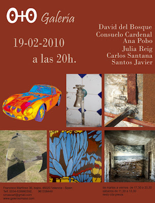

"Singular y Plural": Exposición del 19-02 a 19-03-2010
viernes, 19 de febrero de 2010



{kind=link}
{kind=link}
David del Bosque (DdB) se caracteriza por mantener en sus obras una constante relación entre el espectador y obra y entre esta y su entorno, formando así un eje conductor a través del reflejo que hace que sus piezas tengan un importante aspecto lúdico.
El trabajo más reciente de DdB que ahora nos presenta son esculturas, aunque como en toda su obra, se puede hablar de instalación ya que en la mayoría de ocasiones el entorno forma parte importante de su trabajo.
Después de exponer fuera de nuestras fronteras la serie "La Colombie", ahora DdB nos muestra en la Galería O+O su versión en tres dimensiones, obras de suelo, pero también de pared, invitándonos a continuar un viaje del que formamos parte mediante el reflejo, un viaje que hace ya varios años comenzó y que aún continua.
Consuelo Cardenal, artista multidisciplinar nos muestra una serie de obras, en la que nos sorprende con su arte digital de vibrante colorido y cuidadas composiciones, es una artista con la necesidad de crear y adquirir nuevos conocimientos, que se redescubre y desarrolla constantemente en su quehacer artístico, en su necesidad de evolucionar.
"Su obra es variada en temática y en materiales, pero la sensibilidad, la estética y el genio creativo solo sorprende a quien no la conoce a fondo. No hay nada más curioso que ver el material gráfico de partida y el resultado definitivo. Su creatividad es mágica, todo lo transforma, acumula un soberbio bagaje profesional que se asoma a través de cada obra. Necesita la belleza para sobrevivir como el aire que respira. Siempre valiente, siempre drástica, constante, genial, exquisita, agresiva, delicada… con un envidiable futuro en el terreno artístico y en todo lo que se proponga." (Alfonso Montero Pascual)
En la actualidad su trabajo está centrado en la investigación y práctica de las nuevas tecnologías y el videoarte.
Ana Pobo, en el mundo de la fotografía, investiga la plástica a través de la huella que el tiempo dejó impresa en los objetos, sus obras, de una gran plasticidad, jugando entre el color y el blanco y negro, nos retrotraen a tiempos pasados en un mundo plagado de ensoñaciones, objetos inanimados, aparentemente abandonados, un microcosmos cargado de erosiones y matices que no escapa a la peculiar visión de la artista. Su mirada parece detenerse en la cotidianidad, en lo efímero, para extraer y mostrarnos a la vez todo su encanto.
Julia Reig, artista polifacética, investigadora nata en el mundo del grabado, nos muestra en su pintura un recorrido onírico y sensorial. Esquemáticos paisajes de un suave cromatismo o abstracciones de formas multidisciplinares de brillante colorido que asemejan antiguas cristaleras donde la luz transciende como claro elemento compositivo.
Carlos Santana, es mucho lo que se podría decir de la peculiar mirada del artista, mas cabe resaltar sus propias palabras "… Arte Gótico es una apuesta estética, es un indagar en el submundo Dark, es una bella inquietante, es un bastón para el corazón, es un rendimiento de los sentidos, son largas noches de insomnio, es la última gota de aliento, es la fría muerte que te ronda, es decepción en tu corazón, es la furia contenida en tus nudillos engarrotados, es pasión, es la quemazón de la absenta en la garganta, es el primer beso y el último, es odio y deseo, es el poema más sucio y más bello… es por encima de todo Amor".
Santos Javier, según palabras de Juan Ramón Benito Esteban "...La ciudad, como marco de referencia de su obra, sigue estando presente a través de las torres de monedas que apiladas simulan pequeños skylines, pequeños Manhattan, islas conectadas por las imágenes de coches, normalmente de gama alta como porsches, que no son sino imágenes derivadas de maquetas, en un juego habitual en su trabajo por el que el cambio de la escala despista del origen de la imagen. Así las imágenes brillantes de coches y montañas de dinero renuevan la tensión en una obra construida sobre el artificio de la imagen y la mirada como realidad paralela al artificio de un mundo que, como ha advertido Bruce Bégout, cada vez se diferencia menos del modelo Las Vegas".